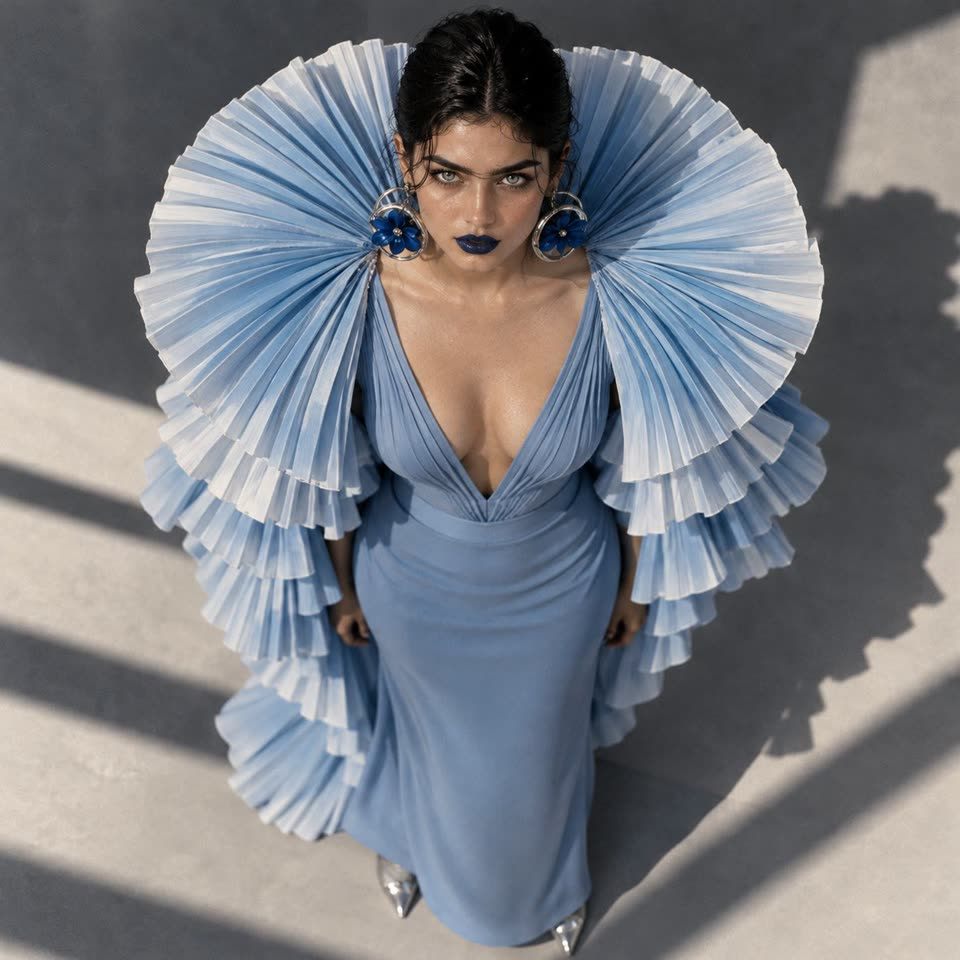

Overhead couture: a giant accordion-pleated ice-blue collar fans like a halo around a powder-blue column gown, hard sun shadows on a grey studio floor
WRD-101Wardrobeunknownby @Tanvir489922026-11-24

Top-down symmetrical fashion still with a fully specified garment (column gown, plunging V, vertical pleating, papery accordion collar with ruffled tiers) and hard directional "sunlight" casting a graphic shadow of the collar. A couture or fabric-campaign composition.
Prompt
Avant-garde high-fashion editorial photograph shot from a high overhead angle, looking down at a woman standing perfectly still in the center of a minimalist studio. She has slicked-back, wet-look jet-black hair pulled tightly off her face, warm olive skin, strong defined brows and an intense, direct, statuesque gaze straight into the camera. Her lips are painted in a bold matte deep-navy blue, with minimal, clean makeup. She wears oversized sculptural silver hoop earrings with cobalt-blue glass flower accents. She wears a sleek, floor-length powder-blue column gown in matte crepe, with a deep plunging V-neckline, a structured bodice with fine vertical pleating at the bust, and a fitted straight skirt that falls to the floor. Pointed silver metallic pumps peek out from beneath the hem. Around her shoulders is a gigantic, architectural, circular pleated collar in pale ice-blue and white paper-like fabric, radiating outward in crisp accordion pleats like a huge fan or halo, with layered ruffled tiers cascading down both arms. The pleats are sharp and sculptural, with subtle creases and a light, papery texture. The setting is a seamless, minimalist studio with a smooth light-gray floor and a darker charcoal-gray wall. Strong, directional natural-style sunlight casts long, graphic, hard-edged shadows across the floor, including a dramatic shadow of her figure and the giant collar on the right, with geometric light patches and soft gradient falloff. Cool, muted palette of powder blue, ice white, silver, charcoal gray and deep navy, with warm skin tones as the only warm accent. Symmetrical, centered, top-down composition, sharp focus on the face and fabric pleats, realistic skin texture, a fine analog film grain with soft, slightly faded tones, high-end couture magazine style, surreal, elegant and powerful mood. Shot on 35mm film, 35mm lens, f/4, 8k resolution, square 1:1 aspect ratio.
Our Seedance 2.5 adaptation
[ADAPTED for Seedance 2.5 by Grok Bot; not the creator's prompt. Follows the official BytePlus Seedance 2.5 prompt guide and its official sd25-pe prompt-optimizer skill: parameters only on the API line (not in the prompt body), subject + action + scene, then visuals, camera (move, subject, start, direction, arrival) and sound; only the source's own exclusions are kept.] API: duration 6, ratio 1:1 (taken from the first frame), resolution 1080p, generate_audio true; first_frame = the WRD-101 still. 【Subject】The model exactly as in the first frame: slicked-back hair, navy lips, powder-blue column gown and the giant ice-blue accordion-pleated collar. 【Action】She stays still and holds her gaze on the lens; a soft breeze makes the outer pleats of the collar flutter in a slow wave around the circle, and the ruffled tiers on her arms lift slightly and settle. 【Scene】The same grey studio floor and charcoal wall, with the hard sun shadow of her figure and collar on the right. 【Camera】Top-down overhead, locked for 2 s, then a slow 15-degree clockwise rotation while staying centred on her face; no cut. 【Visuals】High-end couture editorial, fine analog film grain, crisp paper-like pleat texture, the shadow edges stay hard and graphic. 【Sound】Soft paper-fabric rustle, quiet studio room tone.
Tags: overhead, couture, pleated collar, sculptural fashion, hard shadows, 35mm film grain, editorial